오늘은 뭐 하고 놀까?
마을 광장에서 친구들을 만나고, 팻말을 따라가면 놀거리가 나와요.
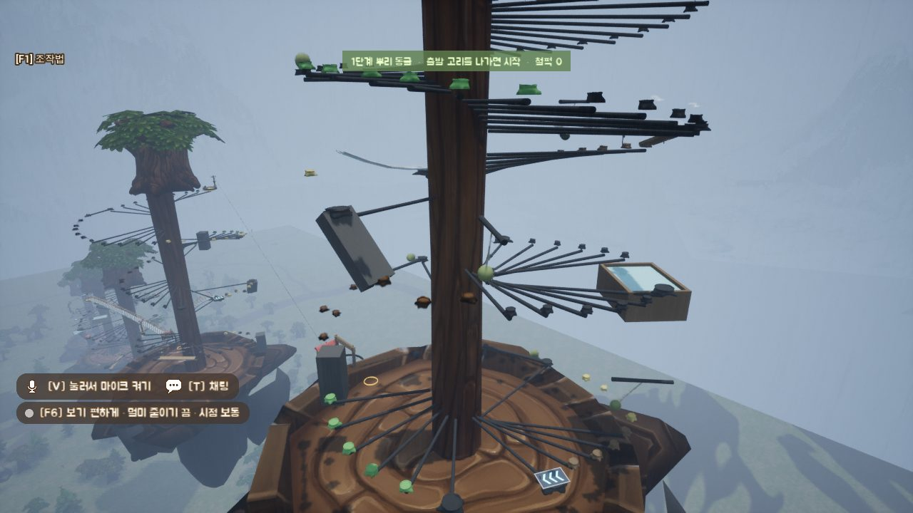
점프 숲
거대한 나무를 빙글빙글 감고 올라가요. 다섯 단계, 꼭대기까지.
처음부터 한 번에 끝까지 오르면 '숲의 주인' 칭호를 받아요.
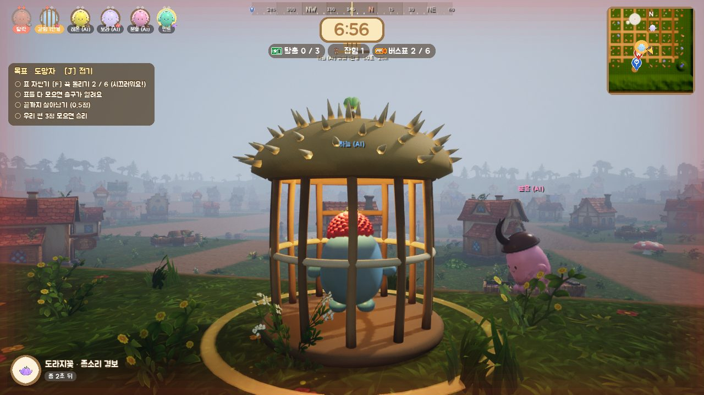
술래잡기
표 자판기를 다 돌리면 출구가 열려요. 술래한테 잡히면 밤송이 우리에 갇히고요.
그러면 다시 나올 수 있어요. 세 번째 잡히면 그땐 정말 탈락이에요.
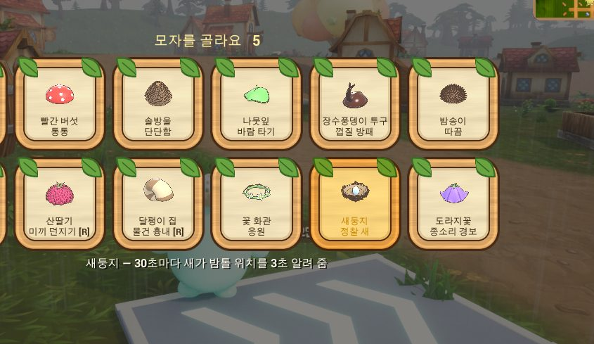
모자마다 능력이 달라요
도토리 모자는 다리가 튼튼해지고, 나뭇잎은 바람을 타요. 새둥지를 쓰면 30초마다 새가 날아올라 다른 밤톨 위치를 3초 동안 알려 줘요.
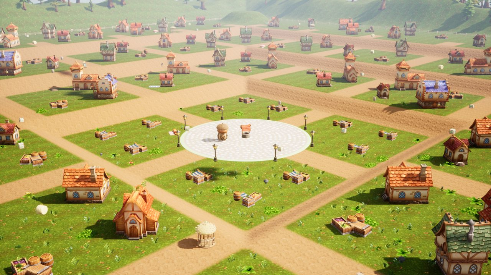
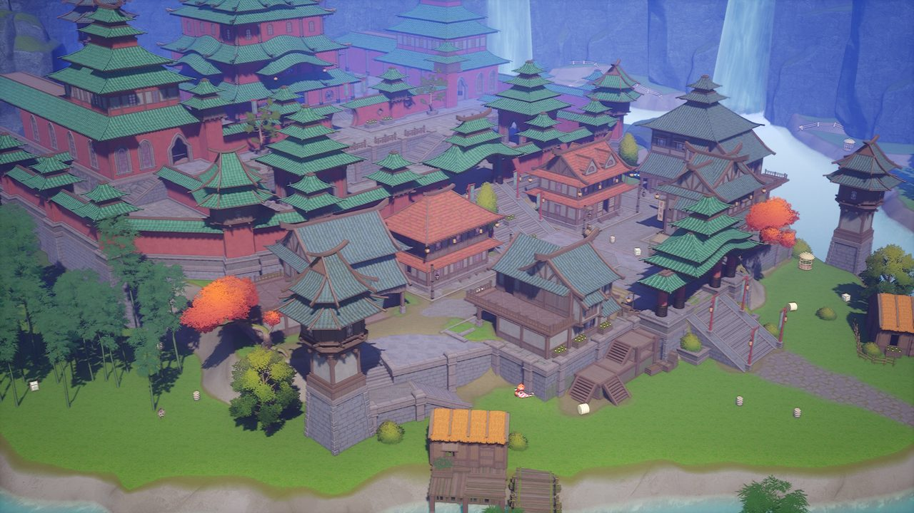
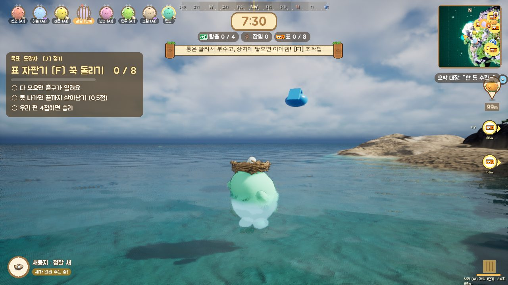
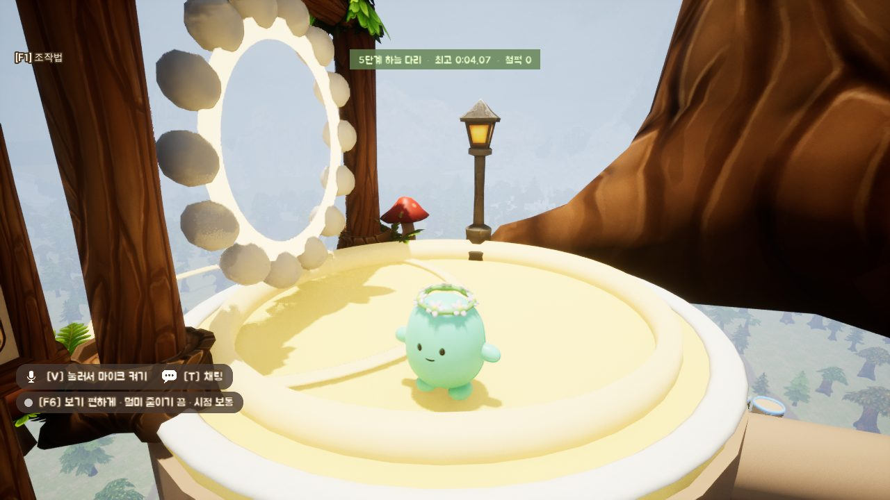
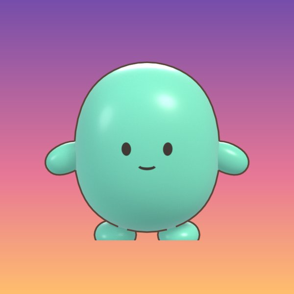
안녕하세요, 우현제입니다
외토리라는 이름으로 이 게임을 혼자 만들고 있어요. 10년 동안 음악을 하다가 올해 2월에 처음 게임 공부를 시작했어요.
프로그래밍을 배우며 게임을 직접 개발하고 있어요. AI 도구도 활용하면서, 구현된 기능을 검토하고 플레이 테스트를 통해 개선해요. 친구들이 시험판을 하는 걸 옆에서 보는 게 제일 재밌어요.
작·편곡, 믹싱
KT텔레캅 고객센터
C++, DirectX 11, 언리얼 5
스팀 출시 준비
만들면서 정한 것들
결정할 때마다 날짜, 이유, 안 고른 쪽을 같이 적어 둬요. 그중 몇 개를 골랐어요.
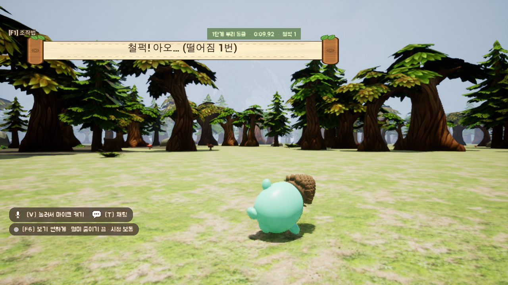
술래잡기 하러 온 친구들이 점프 맵에서 4시간 반을 놀았다
원래는 술래잡기가 중심이었어요. 그런데 시험하러 온 동료 셋이 술래잡기를 한 판 하고는 점프 맵만 4시간 30분을 했어요. "떨어져도 열이 안 받는다"면서요.
그래서 점프 맵도 술래잡기만큼 키우기로 했어요. 지금은 놀거리끼리 서로 이어지게 만드는 중이에요. 한 데서 얻은 게 다른 데 갈 이유가 되면 금방 질리지 않을 거라고 봤어요. 제작(크래프트) 요소는 아직 다듬고 있어요.
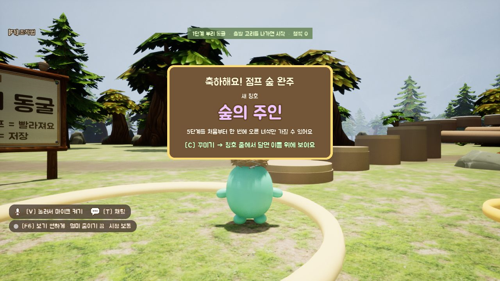
처음만 크게, 다시 깨면 조금
같은 탑을 계속 돌면서 도토리만 모으는 건 막고 싶었어요. 대신 하루에 한 번은 들를 이유가 남게 했어요.
숫자는 표 파일에 따로 빼 둬서 코드를 안 건드리고 고쳐요.
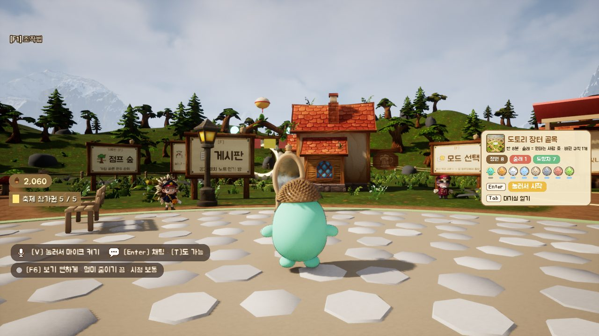
"모든 부분은 직관적으로, UI는 특히"
처음엔 모드를 긴 설정 목록에서 골랐어요. 지금은 마을 광장을 걸어 다니다 팻말 앞에 서면 어떤 맵인지 그림으로 뜨고, 몇 명이 하는지 보여 줘요. Enter 한 번이면 바로 시작해요.
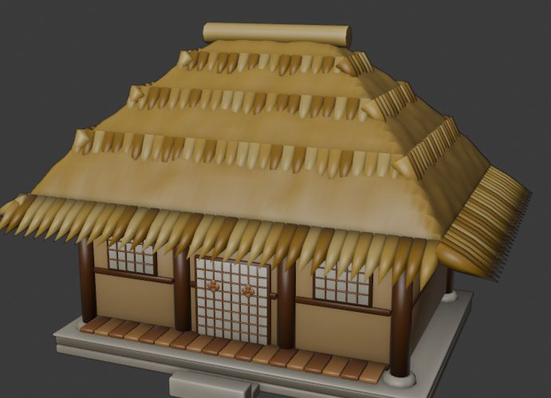
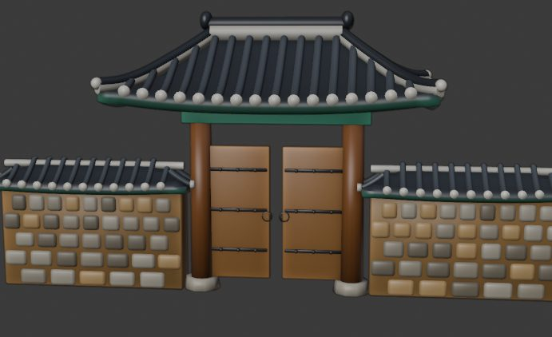
벚꽃 동양 마을, 그리고 초가집과 대문
귀여운 캐릭터 게임이지만 한국 느낌이 나는 곳도 있었으면 했어요. 동양 마을 맵에 이어 초가집, 기와집, 대문, 정자 같은 한옥 소품을 만들고 있어요.
확률은 다 보여 주고, 돈으로는 안 판다
도토리 50개로 한 번, 꾸밈 아이템 중 하나가 나와요. 비싼 건 드물게 나오고(가중치 1 / 값^1.5), 확률은 화면에 다 보여 줘요. 겹치면 그 아이템 값의 1/10을 돌려받아요.
도토리는 게임을 해서만 모을 수 있고, 돈으로는 안 팔아요.
| 날짜 | 정한 것 | 왜 |
|---|---|---|
| 10/14 | 그물로 아래 친구를 끌어올리기, 단 친구가 가 본 단계까지만 | 갈고리는 잘하는 사람만 써서, 서툰 친구도 도울 방법이 필요했음 |
| 10/14 | "절대 누르지 마시오" 빨간 버튼, 눌러도 저장은 안 지움 | 장난은 살리고, 열심히 오른 사람이 다 잃지는 않게 |
| 10/15 | 쿼터뷰 화면 고정 뺌 | 캐릭터가 화면 밖으로 사라지고, 가장자리 이동은 멀미가 남 |
| — | 토끼 이름 "토토" → "또또" | 한국에선 "토토"가 스포츠 내기로 읽힘 |
AI랑 같이 만드는 법
AI 작업창을 역할별로 여러 개 띄워 동시에 돌려요(제작, 마케팅, 번역, 음악, 스팀 설정). 서로 같은 파일을 고치거나 그래픽카드를 같이 잡는 일이 생겨서 아래 장치를 만들었어요. 만드는 건 AI가 했고, 뭘 막고 뭘 검사할지는 제가 정했어요.
그 전에 만든 것들
다 만들고 다시 해 보면서, 아쉬운 점도 같이 적었어요.
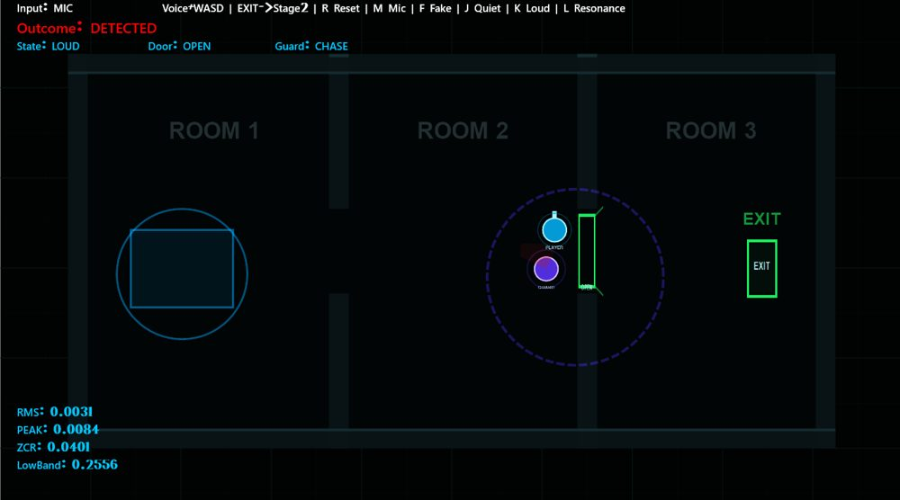
▶ 플레이 영상EchoBreaker
낮게 "음—" 하고 울리면 문이 열리고, 크게 말하면 경비병이 쫓아와요. 처음엔 소리가 크면 열리게 했더니 에어컨 소리에도 열려서, 낮은 소리가 얼마나 섞였는지로 바꿨어요. 제 목소리를 재 보고 판정 대역을 70~190Hz로 좁혔어요.
다음엔 음악 박자에 맞춰 말을 넣는 리듬 요소를 붙여 보고 싶어요. · GitHub
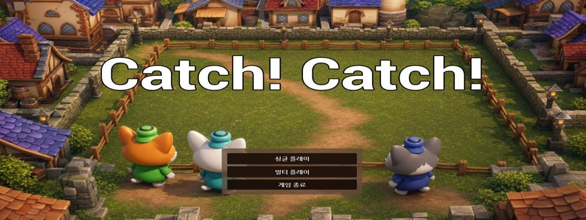
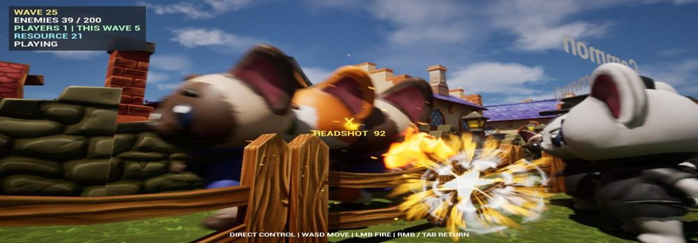
CatLoopDefense
50줄짜리 표에 "몇 웨이브부터, 몇 웨이브마다, 얼마씩 세지는지"를 넣어 200웨이브를 만들었어요. 사람이 늘면 적도 늘고, 한꺼번에 나오는 적 수엔 상한을 뒀어요.
아쉬운 점 길이만 늘고 재미는 약했어요. 다시 만든다면 웨이브 사이에 증강 3개 중 하나를 고르고, 유닛을 5개 후보 중에서 뽑게 할 거예요.
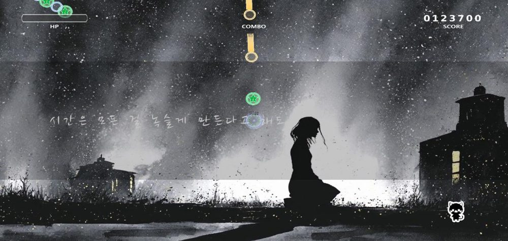
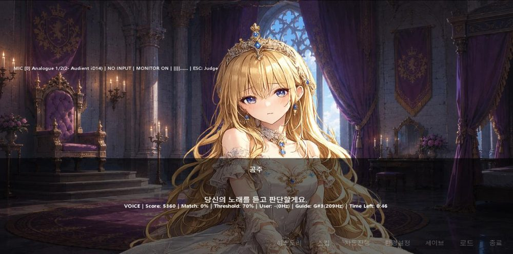
DirectX 11 게임 3종
대사, 선택지, 레벨 진행을 데이터로 빼서 같은 엔진으로 장르를 바꿔 봤어요.
아쉬운 점 리듬 게임은 원이 바깥으로 퍼지게 하고, 숫자 패드 1~9를 화면 9칸에 맞추면 더 또렷했을 것 같아요.
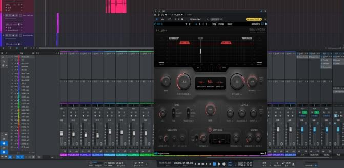
▶ 리스코어 영상AION2 트레일러 리스코어
트레일러 장면마다 소리의 세기와 화음을 살펴 음악을 새로 붙였어요. 초기 스케치는 AI(Reaper MCP)로 빠르게 잡고, 가상악기 배치와 믹싱·마스터링(48kHz/24bit)은 직접 마감했어요.
원본과 나란히 놓고 분석기로 싱크와 밸런스를 다시 맞췄어요.
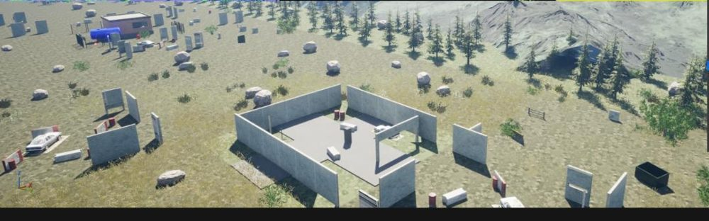
ProjectPG
팀이 모은 오브젝트 152개를 9가지 틀과 표 한 장으로 정리했어요. 맵을 세 구역으로 나눠 약한 무리, 센 몬스터, 보스를 따로 두었어요.
맵 생성·캐릭터·인벤토리는 팀원이 맡았어요.